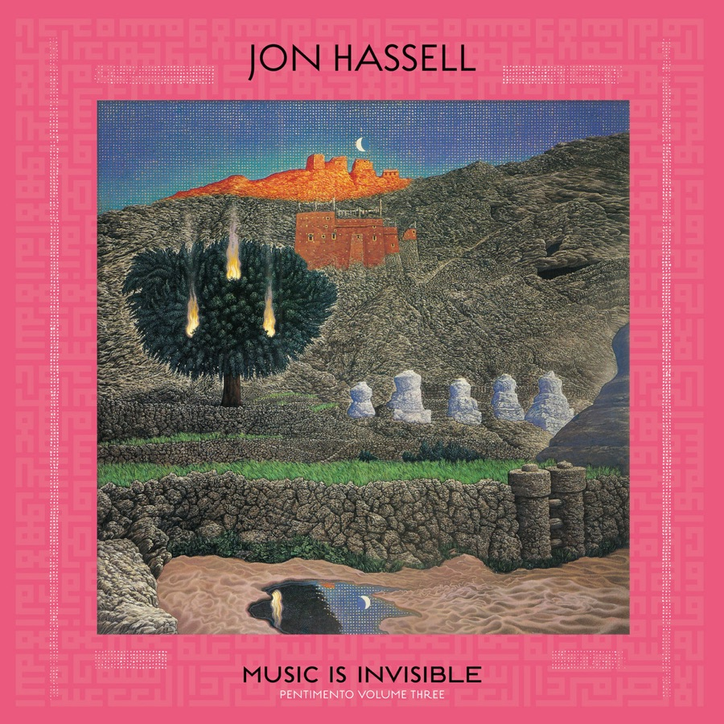

John von Seggern / selected press
The music, in conversation.
Writing and conversations around Music Is Invisible, Jon Hassell's final live performance with Rick Cox and me. Below that, selected interviews and coverage from my own work in music.

01 / Music Is Invisible
The final concert, heard again.
A 2015 performance at St John at Hackney became the third volume of Jon Hassell's Pentimento trilogy in 2026. The coverage below includes conversations with me and independent responses to the record.
Conversations
John von Seggern on Jon HassellA 27-minute conversation with Jedd Beaudoin about working with Jon, our friendship, and the new album.
Music Is Invisible & AtmosphericsJason Gross speaks with Rick Cox and me about the London concert and making music with Jon Hassell.
“Music is Invisible” Gets MeltedAn on-demand radio conversation on Hassell's legacy, our years together, and the final chapter of the trilogy.
Reviews & features
Jon Hassell: Music Is InvisibleJon Buckland hears a shifting, cinematic final statement and names the trio behind Hassell's last concert.
Life and Death in Jon Hassell's Fourth WorldBlake Leyh traces the album through Hassell's wider body of work and speaks with co-producer Jeff Rona.
Music Is InvisibleJacob Haagsma reviews the album's rebuilt live recordings and names Rick Cox and John von Seggern.
Jon Hassell: Music Is InvisibleEdwin Hofman revisits the Hackney performance and the improvising trio at the heart of the record.
Jon Hassell: Music Is InvisibleA detailed account of the final London concert, its reconstruction, and the warmth of the trio's playing.
La musica invisibile di Jon HassellAlberto Campo places the posthumous record and its trio performance in the Pentimento sequence.
Jon Hassell's First Posthumous Album to Arrive This FallNina Corcoran announces the album and identifies the trio recorded at St John at Hackney.
02 / Other work
A longer musical conversation.
Selected interviews and coverage spanning solo releases, collaborations, and earlier chapters of my career.
Balancing Jazz Improvisation and Pop DisciplineJames Cox and I talk about jazz, pop tours, ambient bass guitar, and finding a musical voice across scenes.
A Thousand Miles from NowhereA review of my collaboration with Matt Piper, followed by an interview with both of us.
John von Seggern Announces Ambient Bass GuitarA profile of the solo album and the path from jazz bass to electronic sound-making.
Jon Hassell tribute: John von SeggernA first-person account of joining Hassell's band and his approach to improvisation and recording.
Interview with Cantopop bassist John von SeggernAn early conversation from the Hong Kong years about touring, bass playing, and crossing musical scenes.
Press inquiries
For the next conversation.
For interviews, review copies, or live inquiries, write to me directly.
Get in touch ↗